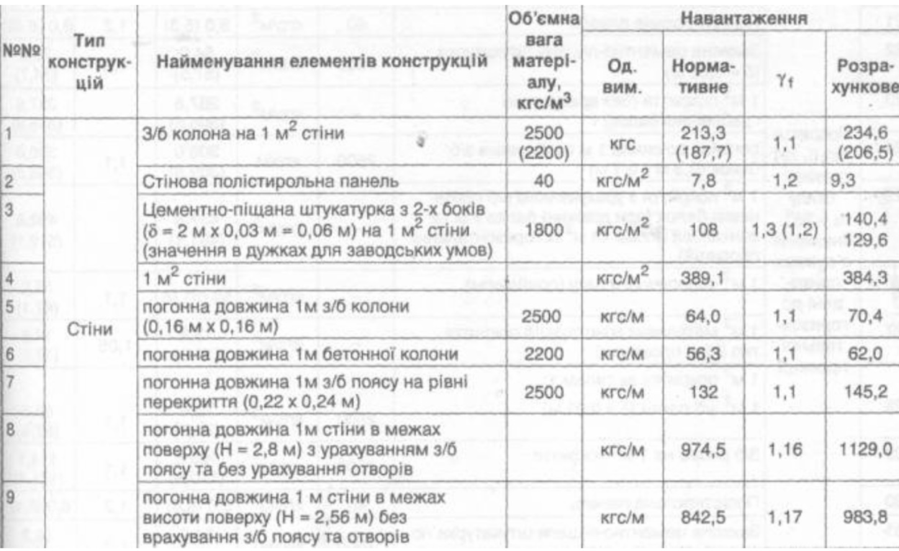

Необхідно створити таблицю для варіанта №1, що відображає навантаження елементів стінових конструкцій. Таблиця повинна мати багаторівневі заголовки, об’єднані комірки, а також містити такі дані: тип конструкції, найменування елементів, об’ємну вагу матеріалу, одиниці вимірювання, нормативні та розрахункові навантаження, коефіцієнт надійності γf. Значення у клітинках подаються у форматі «число» або «число (число)» відповідно до методичних вказівок.
| №№ | Тип конструкції |
Найменування елементів конструкцій | Об’ємна вага матеріалу, кгс/м3 |
Навантаження | |||
|---|---|---|---|---|---|---|---|
| Од. вим. | Нормативне | γf | Розрахункове | ||||
| 1 | Стіни | З/б колона на 1 м2 стіни | 2500 (2200) | кгс | 213,3 (187,7) | 1,1 | 234,6 (206,5) |
| 2 | Стінова полістирольна панель | 40 | кгс/м2 | 7,8 | 1,2 | 9,3 | |
| 3 | Цементно-піщана штукатурка з 2-х боків (δ = 2 м × 0,03 м = 0,06 м) на 1 м2 стіни (значення в дужках для заводських умов) | 1800 | кгс/м2 | 108 | 1,3 (1,2) | 140,4 / 129,6 | |
| 4 | 1 м2 стіни | — | кгс/м2 | 389,1 | — | 384,3 | |
| 5 | Погонна довжина 1 м з/б колони (0,16 м × 0,16 м) | 2500 | кгс/м | 64,0 | 1,1 | 70,4 | |
| 6 | Погонна довжина 1 м бетонної колони | 2200 | кгс/м | 56,3 | 1,1 | 62,0 | |
| 7 | Погонна довжина 1 м з/б поясу на рівні перекриття (0,22 м × 0,24 м) | 2500 | кгс/м | 132 | 1,1 | 145,2 | |
| 8 | Погонна довжина 1 м стіни в межах поверху (H = 2,8 м) з урахуванням з/б поясу та без урахування отворів | — | кгс/м | 974,5 | 1,16 | 1129,0 | |
| 9 | Погонна довжина 1 м стіни в межах висоти поверху (H = 2,56 м) без врахування з/б поясу та отворів | — | кгс/м | 842,5 | 1,17 | 983,8 | |